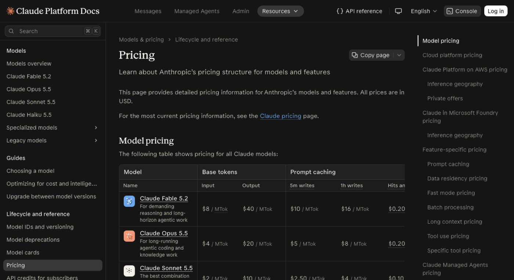
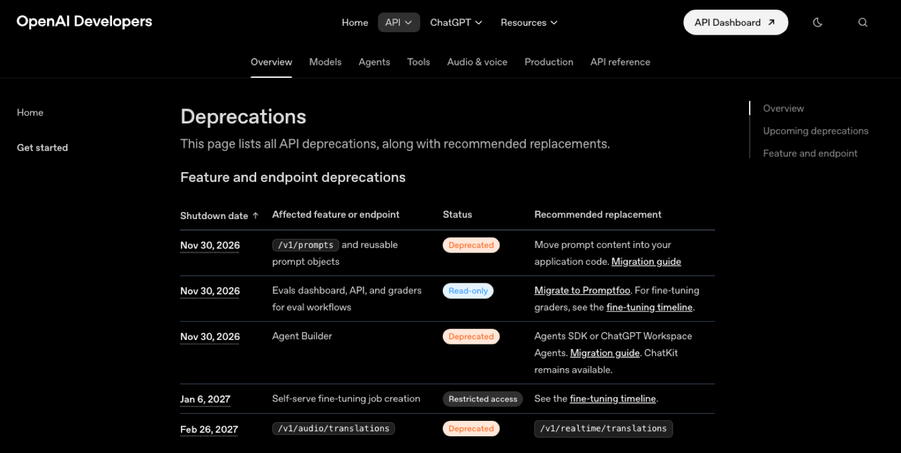
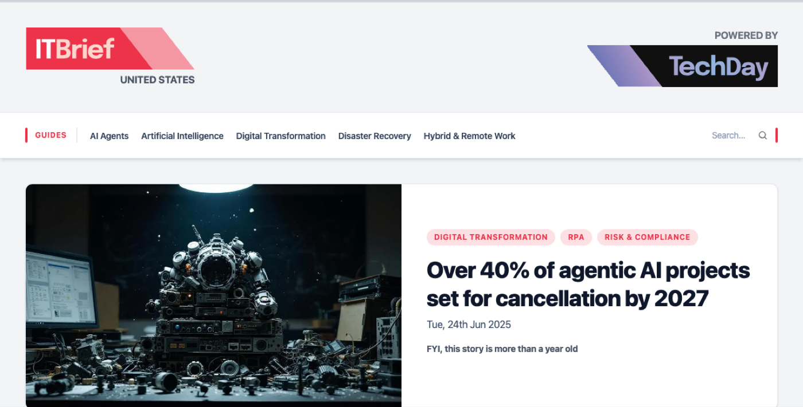

Week 6: A service has an owner, a cost per task and an SLA
Before class
- Watch 6.1 The cost of a task, 6.2 Observability and regression in production and 6.3 Build, buy or wait: platform risk and ROI. About ten minutes in all. The quiz has five questions on them.
- Read Google, Prototype to Production (the Day 5 whitepaper), and Brynjolfsson, Li and Raymond, Generative AI at Work. Read the second one for who gained and who did not.
- Bring your team's LangSmith project and the failure categories from your error analysis.
Tonight
| 5:30 | Quiz on the videos. Trace of the week, one team, ten minutes. Then the ideas below, with the room. |
| 6:10 | Lab 6, Operate. One dashboard, one regression run, then the case discussion. |
| 7:50 | Break. |
| 8:05 | Studio. The operations sheet and the decision memo draft. |
| 9:15 | Synthesis, and what to do before week 7. |
What one task costs
Cost is the number an executive will ask for first, and the one most teams cannot produce. Providers charge per token, separately for input and output, priced per million on the pricing page. Output costs several times more than input, and cached input costs a fraction of fresh input. The exact numbers change every few months. The structure does not.

For an agent, two things follow. Input is most of the bill, because the whole context is sent on every turn, so the input for turn six includes everything from turns one to five, and a task that takes twelve turns costs far more than twice a task that takes six. Multiply by the runs, including retries and failures, and you have the cost of the service. And caching the stable part of the context, the instructions and the tool schemas, is the single cheapest optimization there is.
You measure it from traces. For each run: input, output and cached tokens per turn, which model served each call, and latency, split between the model and waiting on tools. For the service: cost per task as a mean and a 95th percentile, because the long tail is where budgets die. Cost per successful task, total cost divided by passes, which is the honest number. And the cost of a failure, what a person spends afterwards fixing what the agent got wrong, which is usually the largest and never appears on the invoice.
Five ways to cut it. Cache the stable prefix. Route: a small model for routine turns, a large one only where judgment is needed, and measure that the pass rate holds. Trim tool results and context, as in week 3. Cap the steps, because a loop that does not stop is the most expensive failure an agent can have. And count the retries: when error analysis removes a failure category, cost per successful task falls too.
Ask the room: question four asks "What does it cost, in money and in people's time, to find out?" Which of the three costs above would you have to guess for your service today?
Seeing what the service is doing
Observability is being able to see what the service is doing. Regression is finding out that a change made it worse before your users do. For every run you need the full trace, the outcome, which is pass, fail, unknown or escalated to a person, and the version of everything involved, because the model, the prompt, the tools and the skills all change independently. For every day: volume, pass rate, cost per task and latency, gate approvals and denials, and the failure categories from your error analysis, counted.
Agents regress for reasons that have nothing to do with your code. The provider updates the model behind the same name. Someone improves the prompt for one case and breaks three others. A tool changes its output format. The documents change, so retrieval changes. Or users start asking for something your golden set never covered.
The defense is the regression run. Before any change goes live, run the golden set k times and compare the pass rate and the cost with the last known good. Same or better: ship it and record the new baseline. Worse: investigate with error analysis. The whole run should be a single command or a single button, or nobody will do it on a Friday afternoon.
The golden set only covers what you thought of. Sampling: the reviewer named in your memo reads a fixed share of real traces every week, and the surprising ones become golden cases. Alerts: pass rate below a threshold, cost above a threshold, a tool called too many times in one run, or a gate denied twice in a row. Alerts are how an Unattended agent earns its position on the dial.
Ask the room: which of the five reasons agents regress has already happened to your team this term, and how did you find out?
The service-level agreement in plain terms
For your service, the SLA is four plain answers the owner can be held to.
| Term | In plain terms | What you write down |
|---|---|---|
| Availability | How often it is there. | The share of the time it answers, and the hours it is promised for. |
| Latency | How long a task takes. | Median and 95th percentile, and the step budget that caps the tail. |
| Fallback | What happens when the pipeline is down. | Who does the task by hand, and how the user is told. |
| Owner | Who answers for it. | One named person who is paged when an alert fires. |
The fallback is the row teams skip. A model provider, a tracing service, your tools or your documents can each be down on a Tuesday morning, and the person who did the task before needs to still be in the role and still have the time. The owner is one person with a name. If the honest answer to who is paged is a team or a vendor, write that down as a risk in the memo.
Build, buy or wait
The executive reading your memo has three options. Build: you control the tools, the data and the dial, and you own the evaluation and the fixes, paid for in engineers and time. Buy: faster to start, and the vendor's evaluation is not yours, so ask for the pass rate on your own cases. Wait: capability keeps improving, but waiting forfeits the value and, more importantly, the learning. A small pilot that measures carefully is the good way to wait.
Two cautionary tales. First, platform risk. OpenAI launched Agent Builder, a visual agent builder, in October 2025. In June 2026 it announced that the visual builder would be retired, with a final date of November 30, 2026, and pointed users to the code-first SDK. Thirteen months from launch to retirement. If your memo recommends buying, say what happens to the service when the platform changes its mind.

Second, agent washing. When Gartner predicted in June 2025 that more than 40 percent of agentic AI projects would be canceled by the end of 2027, for rising cost, unclear business value and weak risk controls, it also estimated that only a small fraction of the vendors selling agentic AI had a genuine agent rather than a rebranded chatbot or a scripted automation. A vendor who cannot show you a trace is selling you a dial position they have not earned.

Ask the room: a vendor offers your team's job as a product, priced per task, with a pass rate on their own demo set. What do you ask for first?
Is it worth it, and for whom
The return on investment goes in the memo as unit economics, with measured numbers. Benefits: minutes saved per task, times tasks per month, times the loaded hourly cost of the person who does it today, plus faster cycle time if someone will pay for speed, plus errors avoided, priced at what an error costs today. Costs: cost per successful task from your traces, review and approval time priced in minutes, and the build and run costs, meaning people, licenses, the regression run and the dashboard. If the benefit depends on the agent being Unattended and your pass^k does not support Unattended, the memo says so and prices the Gated version instead.
Then the people. Brynjolfsson, Li and Raymond followed more than five thousand customer-support agents after an AI assistant was introduced (NBER Working Paper 31161). Issues resolved per hour rose about 14 percent on average and about 34 percent for the least experienced workers, and the most experienced gained little. The assistant carried the practices of the best workers to the newest ones.
So the memo says what changes for three groups: the user, who becomes a reviewer, the experienced people, whose knowledge became the instructions and the golden set and who must keep them current, and the owner, the reviewer and the approver, which are new jobs with hours attached. If those hours are not in the cost column, the return is overstated.
Ask the room: for your team's job, who is the novice and who is the expert, and which one should review the agent's output?
Trace of the week
One team opens the evening with one trace, in the actual trace view, ten minutes. While they present, count the tokens per turn and find the turn where the context grew most, which is usually a tool result that came back larger than anyone expected. Ask the team what they would trim.
Lab 6: Operate
Goal: the owner's numbers from your own traces, one change, and a regression run. Starter files are posted on iCollege before class. One output sheet per team at 7:50.
Code path
- Open your team's LangSmith project. Build a small dashboard: volume, pass rate, cost per task, latency, gate approvals and denials, and the failure categories from your week 4 error analysis.
- With the starter script, price the tokens per turn in each trace at the list prices for the model that served the call. Report cost per task, mean and 95th percentile, cost per successful task, and the price basis.
- Record the last known good on the golden set: pass rate, pass^k and cost per task. Then change one thing in the harness: the prompt or the model.
- Run the golden set again k times as a regression run and compare with the last known good. Same or better: record the new baseline. Worse: investigate.
No-code path
- Open the Fleet agent's runs in LangSmith. Use the dashboard view for the same numbers, and tag the week 4 failure categories on the failed runs by hand.
- Open five traces, read the token counts per turn, price them from the pricing page, and compute cost per task, its 95th percentile and cost per successful task. Write down the price basis.
- Record the last known good from your week 4 experiment on the golden set dataset. Then change one thing: the agent's instructions, or its model.
- Run the dataset again k times from the evaluation view as a new experiment and compare it with the last known good. Same or better: record the new baseline. Worse: investigate.
Then the case discussion, for everyone. Each team takes one of the anonymized company briefs handed out in class, answers the four questions about it in ten minutes, then argues deploy, extend the pilot or stop, with the two numbers that decided it.
Output sheet, one page per team:
- The dashboard numbers.
- Cost per task and per successful task, with the price basis stated.
- The regression run result, before and after, and the call.
- The team's verdict on its brief, with the two numbers that decided it.
Studio: the operations sheet and the decision memo draft
Two deliverables before next week's session, both on the project page: a one-page operations sheet for the person who will be paged, and a two-page decision memo for the executive who decides. Start with the sheet, because the memo quotes it.
The operations sheet, one page, with these headings:
- Owner: one named person, with the reviewer and the approver behind them.
- Cost per task and per successful task, with the 95th percentile, the price basis, and the budget cap per task.
- Latency: median and 95th percentile.
- Availability and fallback: the hours promised, and who does the task by hand when the pipeline is down.
- What breaks and who is paged: the two alerts and their thresholds, and the price of a human minute.
- The regression procedure: the command or button, the k, and where the last known good is recorded.
The decision memo, two pages for an executive, with these headings:
- Recommendation: deploy, extend the pilot or stop, in the first line.
- The job and the user.
- The numbers: pass^k, cost per successful task, latency, the dial position.
- The risks and the gates, from the security review.
- What it would take to go further, and what would change your mind.
- The named owner, approver and reviewer.
When I sit with your team I will ask three things: what one task costs today by hand and with the agent, what the pass^k number would have to be before the executive says yes, and who the named owner is.
Synthesis
- Cost per task is the sum over turns, input is most of the bill, and cost per successful task is the honest number.
- Observability is the trace, the outcome and the version of everything. The regression run compares the golden set with the last known good before a change ships.
- The SLA in plain terms is availability, latency, the fallback and a named owner.
- Build, buy or wait is decided with measured numbers, and the memo prices the platform changing its mind.
Before week 7: watch videos 7.1 to 7.3 and read Anthropic, How we built our multi-agent research system, and Cemri et al., Why do multi-agent LLM systems fail? Submit the operations sheet and the decision memo draft. Next week: multi-agent systems and when not to build them, long-running agents, and what the benchmarks say about the limits.
Sources
- Google, Prototype to Production (Day 5 whitepaper), 2025.
- Brynjolfsson, Li and Raymond, Generative AI at Work, NBER Working Paper 31161.
- Claude Platform Docs, Pricing, November 2026.
- OpenAI Developers, Deprecations, 2026.
- Gartner, Gartner predicts over 40% of agentic AI projects will be canceled by end of 2027, June 25, 2025.
- IT Brief US, Over 40% of agentic AI projects set for cancellation by 2027, June 24, 2025.
- LangChain, LangSmith Fleet documentation.
- Anthropic, How we built our multi-agent research system, June 13, 2025.
- Cemri et al., Why do multi-agent LLM systems fail?, arXiv, March 2025.